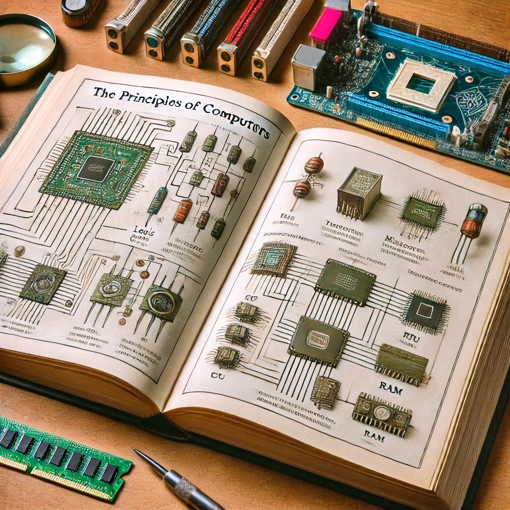

CODE
목차
작가
찰스 펫졸드
출판일
1999년
감상평에 대한 AI그림
컴퓨터의 원리를 구체적이게 학습할 수 있는 책이다.
cpu, 메모리 등 다양한 컴퓨터 부품들이 어떤 원리로 작동하고 진화하는지를 쉽게 알 수 있어서 좋았다.
책 내용이 어려워서 1년동안 계속 다시 읽으면서 겨우 이해했지만,
그 과정에서 얻은 지식들은 컴퓨터를 배우는데 너무 중요해서 많은 시간을 들여 읽을 가치가 있다고 생각한다.

감상평에 대한 AI평가
✨성실함: 내용이 어려워 1년 동안 반복해서 읽은 경험을 통해, 학습 과정에서의 꾸준한 노력과 그로 인한 성장에 대한 감정을 나타냅니다. 이는 독자가 책을 통해 배운 것에 대해 얼마나 진지하게 접근했는지를 잘 보여줍니다.
✨긍정적 평가: 컴퓨터 부품들의 작동 원리와 진화 과정을 쉽게 이해할 수 있었다는 점에서 책의 내용에 대한 높이 평가하는 태도가 나타납니다. 어려운 내용을 쉽게 풀어낸 점에 대해 감사하는 마음이 드러나 있습니다.
✨객관적 비평: 내용이 어려워 반복 학습이 필요했던 부분을 언급하며, 책의 난이도에 대한 솔직한 의견을 제시합니다. 이는 비판적이지만 동시에 책의 가치에 대한 인식이 잘 드러나는 부분입니다.
이 감상평은 책이 주는 학습적 가치와 그에 따른 어려움, 그리고 그것을 극복한 성취감을 잘 전달하고 있으며, 진지하고 성실한 학습 태도를 엿볼 수 있는 좋은 평가입니다.